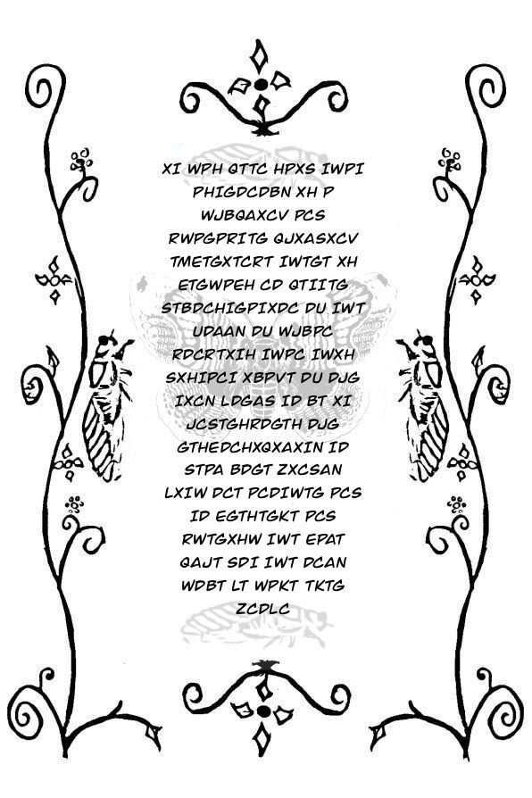

Memorando interno · Departamento de Recrutamento
Avaliação concluída
Resultado: APROVADO(A).
A mariposa sempre procura a luz. Você também procurou.
Relatório de desempenho
- Percepção: cores em hexadecimal
- O(a) candidato(a) leu #00FF00 como quem lê uma palavra. É assim que quem desenvolve sites escreve cada cor da tela.
- Documento: vazamento de dados
- O(a) candidato(a) encontrou uma palavra de acesso debaixo de uma tarja que só pintava por cima do texto. Erros assim já expuseram documentos de governos e empresas, e encontrá-los é o trabalho de quem atua com segurança da informação.
- Entrevista: criptografia
- O(a) candidato(a) quebrou a cifra de César. Testar todas as chaves se chama força bruta. As cifras usadas hoje têm tantas chaves que testar todas levaria mais tempo do que a idade do universo.
- Painel: binário e endereços
- O(a) candidato(a) leu lâmpadas como letras e abriu uma porta escrevendo na barra de endereço. Todo texto, foto e vídeo do seu celular é guardado em zeros e uns, e todo site é um conjunto de endereços que alguém programou.
Nota do avaliador
Nada disso exige talento especial. Exige o que você acabou de demonstrar: atenção, paciência e vontade de olhar por trás das coisas. É exatamente isso que se faz na área de tecnologia, todos os dias.
Próximos passos recomendados
- Olimpíada Brasileira de Informática: competição para estudantes, com provas para quem ainda não programa e para quem já programa.
- Curso em Vídeo: cursos gratuitos de programação, em português.
- picoCTF: desafios de segurança como estes, do básico ao avançado, em inglês.
Adendo 3301-Ω · desafio extra
Este documento foi encontrado no fim do caminho original. Ele usa a mesma cifra, mas com outra chave e em outra língua. Responda com as três palavras que a mensagem usa para chamar a Terra.

Assegurar. Conter. Proteger.